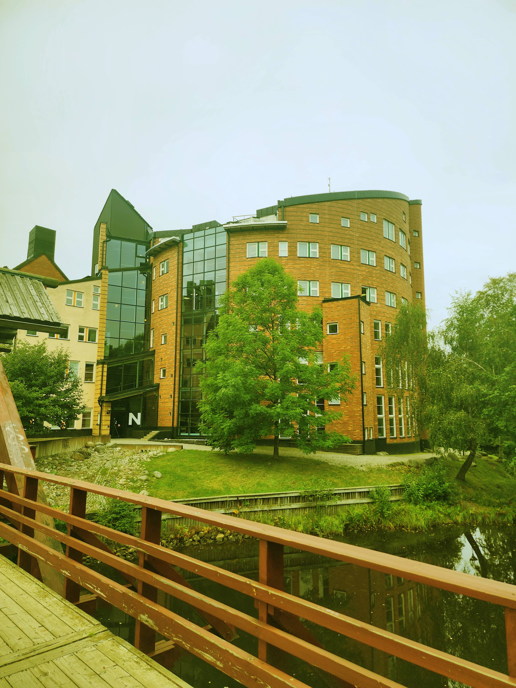

Bild 1 - Bergslandskap med blommor
Originalbild

Redigerad bild

Jag har färglagt en av blomklasarna (mittersta) från rosa/lila till blå med hjälp av pensel- och fyllningsverktyget. Jag har även ökat ljusstyrkan, justerat färgbalansen och ökat färgmättnaden för att få fram tydligare färger.
Bild 2 - Blomma med fluga
Originalbild

Redigerad bild

Jag har ökat ljusstyrkan och kontrasten. Jag har även justerat färgerna för att få mer balanserade nyanser.
Bild 3 - Mittuniversitetets campus i Sundsvall
Originalbild

Redigerad bild

Jag har tagit bort det översta fönstret på den lägre byggnaden (utbyggnaden) till höger. Jag har minskat gröna toner och förstärkt de blå för att få bilden att passa bättre ihop färgmässigt med dom andra bilderna. Jag har sänkt exponeringen något men samtidigt ökat ljusstyrkan. Till sist har jag beskurit bilden upptill för att få mer fokus på skolan, eftersom den ljusa himlen tog mycket uppmärksamhet.